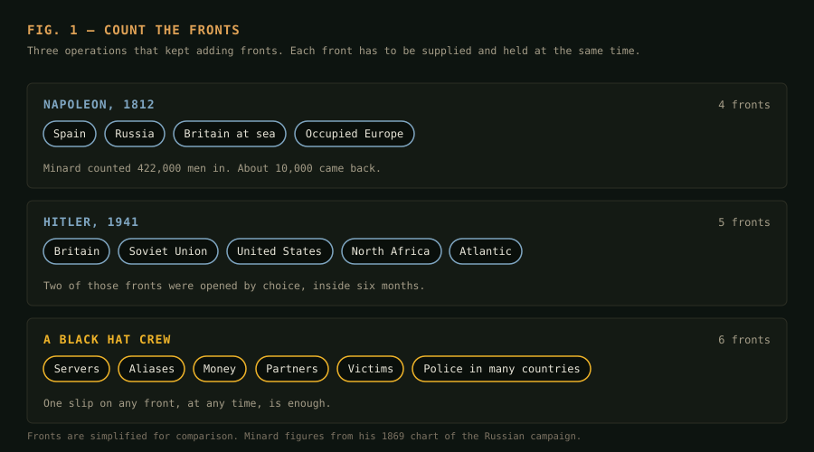
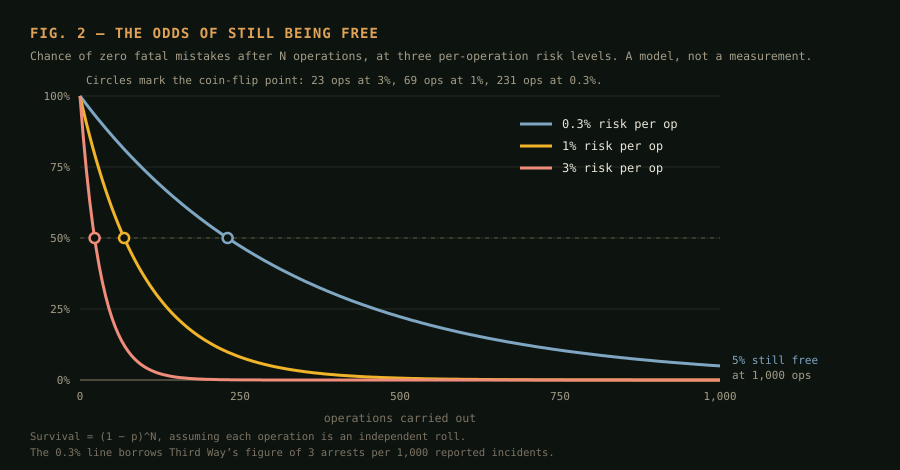

Savvy Security LLC · Analysis
Too Many Fronts
Napoleon and Hitler both lost by fighting everywhere at once. Big black hat operations make the same mistake, and the arithmetic is not on their side.
The short version
Napoleon and Hitler were not beaten by one better army. They opened more fronts than they could supply, and the whole thing came apart at once.
A black hat operation has fronts too: servers, fake names, money, partners, victims, and police in a dozen countries. Every one has to be held perfectly, forever. An investigator only needs one slip.
I am not going to tell you every hacker gets caught. Most don’t, and I’ll show you the number. The claim here is narrower and I think stronger: the bigger a criminal operation grows, the faster the odds turn against it.
There is a saying in security that the defender has to be right every time and the attacker only has to be right once. It is true for a single break-in. It is backwards for a criminal career.
Once the question changes from “can they get in?” to “can they stay anonymous?”, the roles flip. Now the attacker is the one who has to be right every time. Every login, every payment, every chat message, for years. The people hunting him get to be wrong all day long and try again tomorrow.
Military history already has a name for what happens next.
1 · The two-front trap
Napoleon. In 1808 he sent his armies into Spain and found a war that would not end. He called it his “Spanish ulcer.” It was still bleeding him in 1812 when he marched on Russia anyway. Charles Minard’s famous chart of that campaign shows 422,000 men crossing into Russia and about 10,000 coming back (Tufte, 1983). He did not lose one decisive battle on the way in. He ran out of food, horses, and distance.
Hitler. In June 1941, with Britain still undefeated behind him, he invaded the Soviet Union. That December he declared war on the United States as well. Inside six months he chose to add the Soviet Union and the United States to a war he had not finished.
Clausewitz described the pattern a century before Hitler tried it. Every attack loses strength as it moves forward. There is a point where the attacker is too stretched to defend what he has taken. He called it the culminating point, and going past it invites a counterblow far worse than the original attack (Clausewitz, 1832). The historian Paul Kennedy gave the long-run version a name: imperial overstretch, where commitments grow faster than the means to hold them (Kennedy, 1987).
Neither empire was out-fought on one front. Both were out-counted across all of them.
2 · The black hat’s fronts
A criminal hacking operation does not have borders, but it has fronts. Count them.

- Servers. Every machine is rented from somebody, paid for somehow, and logged by someone.
- Aliases. Each fake name has to stay sealed off from every other name and from the real one. For life.
- Money. Stolen money is worthless until it is cleaned, and every step of cleaning it leaves a record.
- Partners. Nobody runs a big operation alone. Each partner is a person who knows something.
- Victims. Every new victim is a new set of logs, a new insurer, and a new complaint.
- Police. Hit ten countries and ten police forces now have a reason to compare notes.
A small operator holds a few of these. Growth adds to every list at the same time. That is the trap: the thing that makes the operation richer is the same thing that makes it findable.
3 · The prisoner’s dilemma inside every crew
The partner front deserves its own section, because it is the one that fails from the inside.
The prisoner’s dilemma came out of the RAND Corporation in 1950. Two partners are arrested and held apart. If both stay quiet, both get a light sentence. If one talks, he walks and the other takes the full weight. Each one, thinking only of himself, does best by talking. So both talk, and both do worse than if they had trusted each other (Poundstone, 1992).
Robert Axelrod spent years studying how cooperation survives that logic. His answer was what he called the shadow of the future. People keep cooperating as long as they expect to keep dealing with each other. Take away the future and cooperation dies on the spot (Axelrod, 1984).
Now look at what an arrest does. It deletes the future. And look at who built the game. Prosecutors offer the first person to cooperate a deal the second one will never see. That is the prisoner’s dilemma, run on purpose, by the house.
Legal businesses solve this with contracts and courts. Criminals can’t sue each other. Online criminals can’t even be sure who the other person is. I covered how the Sicilian mafia spent a century engineering around that problem in The Trust Problem. Cybercrime crews have the same problem with fewer tools.
The research backs this up. A study of the largest hacking forum of its time looked at 449,478 trust ratings across nearly 30,000 members. Its conclusion on growth is the one that matters here: the reputation system could not stop trust from decaying as the community expanded quickly (Dupont et al., 2016). The crew got bigger and trust got thinner.
Hector Monsegur, known as Sabu, was a leader of the hacking group LulzSec. He was reported to have logged into a chat server one time without hiding his address. Monsegur has disputed that account. What is not disputed is what came next. Federal agents arrested him on June 7, 2011. He agreed to cooperate the next day.
He was facing up to 124 years. He kept playing Sabu online for months while working for the FBI, and in March 2012 five of his associates were charged. He was later released with time served. One front failed, and then the partner front handed over the rest.
4 · The math
Here is the part I had to be careful with. The easy version of this argument says “it’s only a matter of time.” The honest version needs a number.
Say every operation carries some small chance of a fatal mistake. Call it p. The chance of getting through one operation clean is 1 − p. The chance of getting through N of them clean is that number multiplied by itself N times:
chance of still being free = (1 − p)N # p = risk per operation # N = number of operations
For a starting value of p, I used the best public figure I could find. The think tank Third Way estimated that only about 3 in every 1,000 cyber incidents reported in the United States lead to an arrest (Eoyang et al., 2018). That is 0.3%. It is a rough stand-in, and I’ll say why below. But start there.

| Risk per operation | After 10 | After 100 | After 500 | After 1,000 | Coin-flip point |
|---|---|---|---|---|---|
| 0.3% | 97% | 74% | 22% | 5% | 231 operations |
| 1% | 90% | 37% | under 1% | about 0 | 69 operations |
| 3% | 74% | 5% | about 0 | about 0 | 23 operations |
Chance of zero fatal mistakes. Rounded.
Read the top row. At 0.3%, somebody who commits one crime almost certainly walks. That is the ugly truth and it is why cybercrime pays in the short run. But a ransomware program does not commit one crime. It commits hundreds. At a thousand operations, 19 out of 20 have made the mistake.
Why more fronts make the curve steeper
That table treats the risk as fixed. It isn’t. Every front is its own chance to slip. If each of five fronts carries a 0.3% risk, the combined risk per operation is about 1.5%, and the coin-flip point drops from 231 operations to 46.
So growth hurts twice. More operations means more rolls of the dice. More fronts means worse dice. Napoleon’s problem was never Spain or Russia. It was Spain and Russia.
What this model leaves out, in both directions.
It is too harsh in one way. The 0.3% figure counts arrests per reported incident in the United States. It is not the personal risk of a careful operator sitting in a country that will not hand him over. For that person the real number is lower, maybe far lower.
It is too kind in another. The model assumes a mistake either sinks you right away or disappears. Real mistakes do neither. They sit in a log, a forum archive, or a mail server and wait. Two of the cases below turned on slips that were years old when someone finally found them.
5 · Four collapses, four fronts
The alias front: Silk Road
In January 2011 a forum user named “altoid” promoted a new hidden marketplace called Silk Road. That October the same username posted a job ad and told applicants to write to a Gmail address containing Ross Ulbricht’s real name. An IRS agent later found the connection with ordinary web searches. Ulbricht was arrested in October 2013 and sentenced to life in 2015. He was pardoned in January 2025. The slip that caught him was two years old on the day of the arrest.
The server front: AlphaBay
AlphaBay became the largest dark web market after Silk Road. When it launched in December 2014, its welcome emails carried the founder’s personal Hotmail address in the header. Investigators learned of it in December 2016. Alexandre Cazes was arrested in Bangkok in July 2017 and died in custody days later. One mail server setting, made on day one, outlived everything he built to hide.
The victim front: DarkSide
In May 2021 a DarkSide affiliate hit Colonial Pipeline and the pipeline that carries roughly half the East Coast’s fuel shut down. That is the Barbarossa move: picking a fight with someone far bigger than the plan allowed for. About a week later DarkSide said it had lost control of its servers and was shutting down under American pressure. A month after the attack the Justice Department seized 63.7 of the 75 bitcoin Colonial had paid.
The partner front: Conti
On February 25, 2022, the Conti ransomware gang publicly sided with Russia’s invasion of Ukraine. Conti had Ukrainian members and associates. Two days later someone with inside access began leaking the gang’s chats: about 60,000 messages, then more than 100,000 more, then source code. Conti opened a political front it did not need, and it was answered from inside its own walls. By May 19 the brand was shut down.
Where the idea breaks
I cite both sides on this blog, so here is the evidence against my own headline.
The people often walk. When Conti closed, its members did not go to prison. Researchers tracked them into smaller crews like Black Basta and Karakurt. The empire fell. The soldiers went home and re-enlisted.
The name can come back. In February 2024, police from about ten countries seized LockBit’s servers in Operation Cronos. That May they named the man they say ran it, a Russian national, and charged him on 26 counts. He has not been arrested. And LockBit itself is back: Check Point counted 163 claimed victims in the first quarter of 2026, fourth among all ransomware groups.
Operation Cronos is still worth studying for what it aimed at. Police did not only take servers. They left a message on the affiliates’ own login page blaming the boss’s “flawed infrastructure,” and said publicly that he had been talking to them. That was an attack on trust. They were running the prisoner’s dilemma against an entire affiliate program.
| Claim | Status | What backs it |
|---|---|---|
| Risk compounds with every operation | Established | It is arithmetic. A small risk repeated many times stops being small. |
| Growth thins out trust | Established | Reputation systems did not stop trust decay as a hacking community expanded (Dupont et al., 2016). |
| Crews turn on each other under pressure | Established | Sabu and LulzSec. The Conti leaks. It is the outcome game theory predicts. |
| Every black hat gets caught | False | About 3 arrests per 1,000 reported incidents (Eoyang et al., 2018). LockBit’s accused boss is still free. |
| A takedown ends the operation for good | False | Conti’s people scattered into new crews. LockBit rebuilt under the same name. |
| Every large criminal operation eventually collapses under its own weight | My bet | The math and the cases point that way. No study proves it for all of them. |
So the house of cards does fall. But be exact about what falls. It is the organization: the brand, the servers, the trust between partners, the money in the wallet. Whether a given person goes to prison depends mostly on what country he is standing in.
That still matters. Criminology has found for decades that the certainty of getting caught deters people far more than the length of the sentence (Nagin, 2013). A business that has to be rebuilt from nothing every two years, with partners who might be informants, is a worse business. That is deterrence too.
What this means if you defend things
- Report it. The 0.3% figure only counts incidents somebody reported. Every report is another roll of the dice against the people who hit you. An unreported attack is a free one.
- Keep your logs longer than feels necessary. Silk Road and AlphaBay both turned on evidence that was years old. The log you delete at 90 days might be the one that mattered at 700.
- Be an expensive front. You don’t have to be unbeatable. You have to cost more time and noise than the next target. Overstretched attackers drop the fronts that fight back.
- Remember whose side time is on. The attacker has to be perfect forever. You only have to still be there, with your records, when he isn’t.
And if you are young, good with computers, and looking at the other path: run the table again. The skills are the same on both sides. On one side every job adds to a record you have to hide for life. On the other side every job adds to a record you get to show people. One of those compounds in your favor. I wrote up how to start on that side in Breaking Into Cybersecurity.
Black hat work scales the risk. White hat work scales the reputation. Same math, opposite sign.
From the book
More on hacker history, culture, and staying on the right side of this math in A Hacker’s Guide to Survive by Malcolm R. Smith.
📖 Get A Hacker’s Guide to Survive on Amazon →
Or read Chapter 1 free first.
Sources
Overstretch and the culminating point
- Clausewitz, Carl von. On War (1832). Edited and translated by Michael Howard and Peter Paret. Princeton University Press, 1976. Book VII, on the culminating point of the attack.
- Kennedy, Paul. The Rise and Fall of the Great Powers: Economic Change and Military Conflict from 1500 to 2000. Random House, 1987.
- Tufte, Edward R. The Visual Display of Quantitative Information. Graphics Press, 1983. Reproduces and discusses Minard’s 1869 chart of the Russian campaign.
Cooperation, trust and deterrence
- Axelrod, Robert. The Evolution of Cooperation. Basic Books, 1984.
- Poundstone, William. Prisoner’s Dilemma. Doubleday, 1992. History of the game at RAND in 1950.
- Dupont, Benoît, Anne-Marie Côté, Claire Savine and David Décary-Hétu. “The ecology of trust among hackers.” Global Crime 17(2), 2016, pp. 129–151. doi:10.1080/17440572.2016.1157480.
- Yip, Michael, Craig Webber and Nigel Shadbolt. “Trust among cybercriminals? Carding forums, uncertainty and implications for policing.” Policing and Society 23(4), 2013, pp. 516–539. Author copy.
- Nagin, Daniel S. “Deterrence in the Twenty-First Century.” Crime and Justice 42(1), 2013, pp. 199–263. doi:10.1086/670398.
- Eoyang, Mieke, Allison Peters, Ishan Mehta and Brandon Gaskew. “To Catch a Hacker: Toward a comprehensive strategy to identify, pursue, and punish malicious cyber actors.” Third Way, 2018. thirdway.org.
The cases (checked November 2026)
- Sabu and LulzSec: “LulzSec takedown analysis.” The Register, March 7, 2012. theregister.com. Includes Monsegur’s denial of the unmasked-login account.
- Silk Road: Schneier, Bruce. “Silk Road Author Arrested Due to Bad Operational Security.” October 2013. schneier.com. Trial testimony: “Simple Google search outed alleged Silk Road founder.” Computerworld, 2015. computerworld.com. Pardon: NPR via OPB, January 22, 2025. opb.org.
- AlphaBay: “One Simple Error Led to AlphaBay Admin’s Downfall.” GovInfoSecurity, 2017. govinfosecurity.com.
- DarkSide and Colonial Pipeline: AFP. “US recovers over half of ransom paid to pipeline hackers.” June 2021. techxplore.com.
- Conti leaks: KELA. “Analysis of leaked Conti’s internal data.” March 15, 2022. kelacyber.com. Shutdown: “Conti Ransomware Gang Shut Down After Splitting into Smaller Groups.” The Hacker News, May 2022. thehackernews.com.
- LockBit and Operation Cronos: “Law enforcement thoroughly dismantle LockBit.” Risky Business News, February 2024. risky.biz. Akamai, “Learning from the LockBit Takedown.” akamai.com. Claim of contact with police: The Hacker News, February 2024. thehackernews.com.
- LockBit in 2026: Check Point Research. “The State of Ransomware – Q1 2026.” May 11, 2026. research.checkpoint.com.
Malcolm R. Smith writes on security architecture, threat modeling, and autonomous defense for Savvy Security LLC. He builds software as a prompt engineer on a used Chromebook, and is the author of A Hacker’s Guide to Survive.